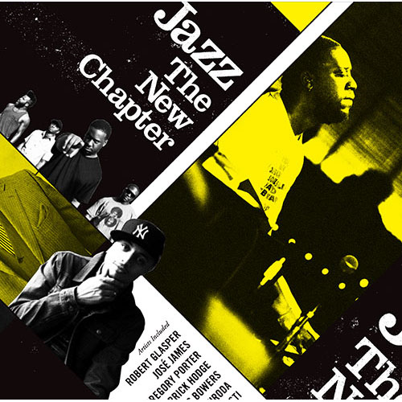
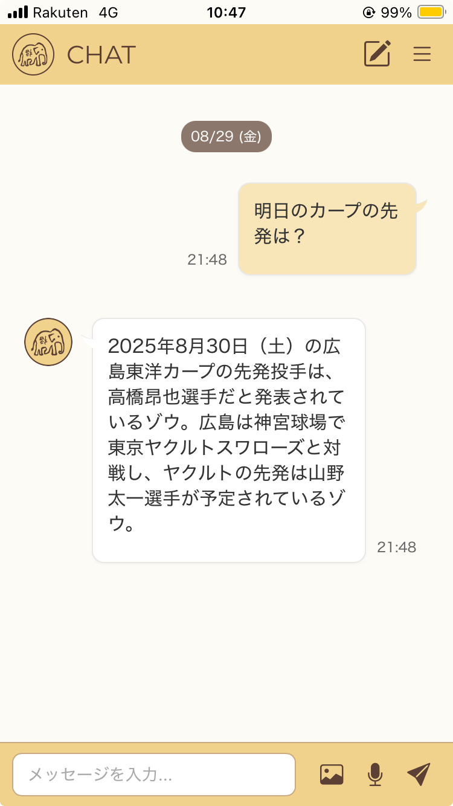

気がつけば割と多趣味なのかも、と思います。
主だったものの紹介です。
Music
いろいろ聴きますが、とくにJTNC (Jazz the New Chapter)系と、その源流とみなされる音楽が好きです。

※画像はUniversal Music Japanさまよりお借りしています。
Taiwan
電車で環島して以来すっかりハマり、ついには台湾華語まで勉強するようになりました。
本サイトのアイコンのモチーフは、台北の象山から拝借しています。
旅の様子はnoteに書いています。
アイコンの元になった写真も中にあります。

Elephant
象が好きなのも、象山がアイコンになっている理由です。
好きな理由はお鼻が長いからです。
とくにアジア象のフォルムが好みです。

※市原ぞうの国などちょこちょこ会いに行きます。
Euro Vintage
とある人の影響で買い始めたのがきっかけで、まあまあな量になってきました。
街で着られる実用的なもののみを集めています。
(なお、アメリカものもそこそこあります)

※画像はThem magazineさまよりお借りしています。
Vibe Coding
Vibe Codingで作りたいものを作るのにハマっています。
このページもその産物です。
軽く調べ物をするためのアプリや、ジムのトレーニングの記録をつけるためのアプリなど、必要ができ次第作っています。
技術的知識もハンズオンで身につくので、勉強と日常の問題解決が同時にできて楽しいです。

そのほか、飲食、写真、映画など。いったん、この辺にしておきます。